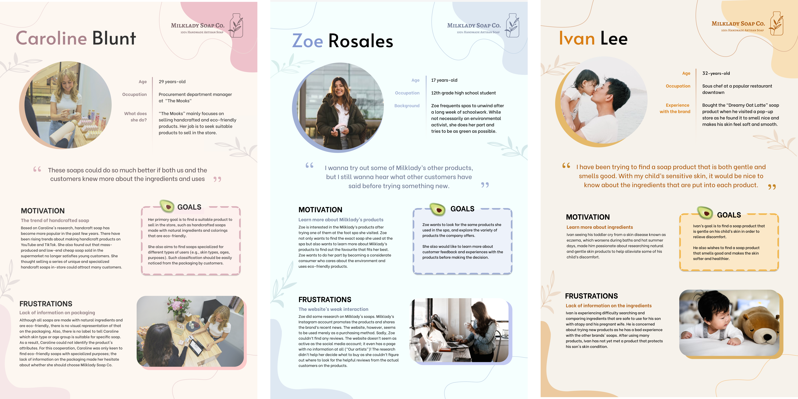
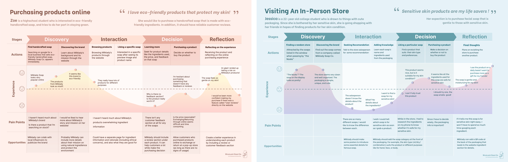
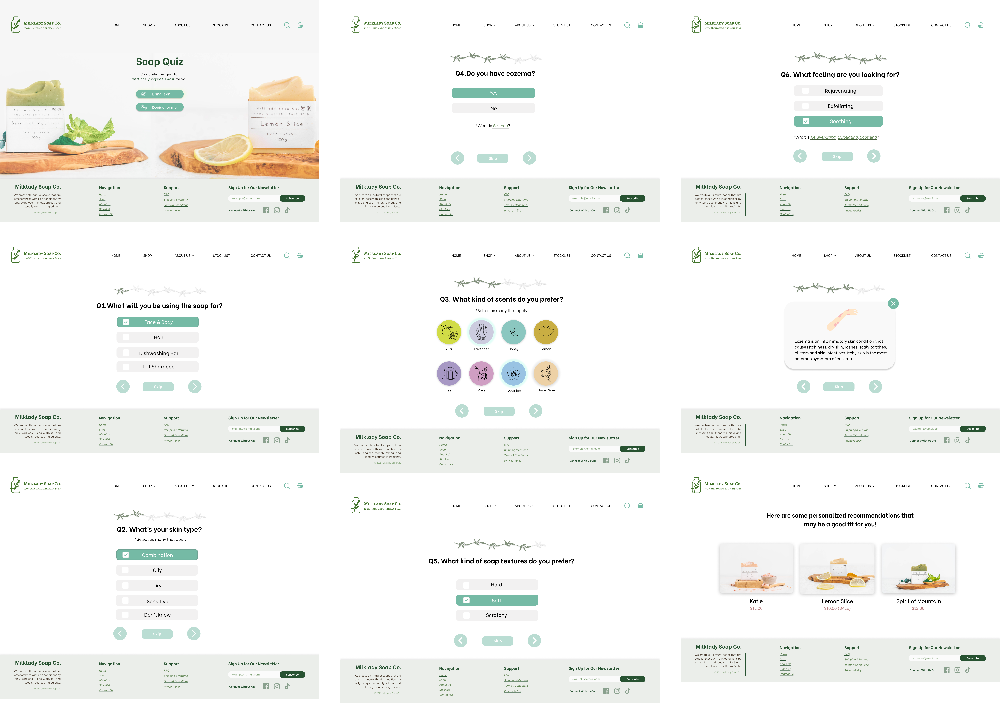
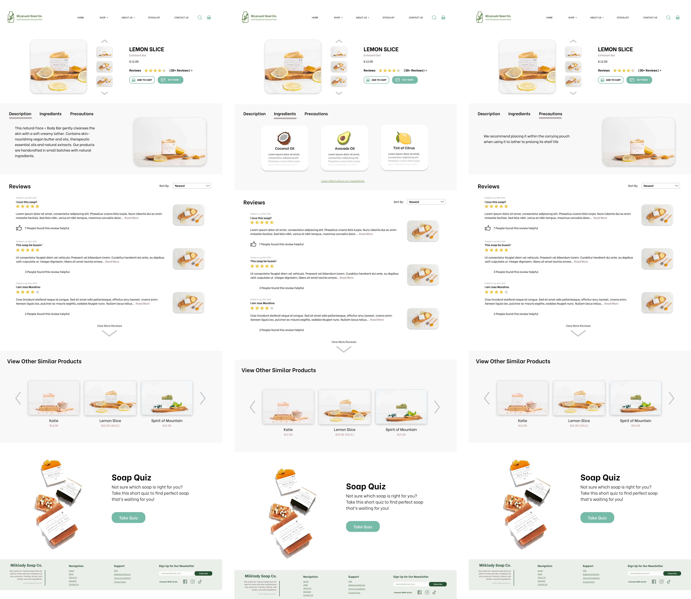

Milklady Soap Company is a one-woman business operated locally in Burnaby, British Columbia by Anna Lee. She produces handcrafted all-natural soaps that are safe for those with skin conditions as they are made from carefully selected eco-friendly ingredients and natural colourants. Milklady also ensures that all of the ingredients are ethically sourced by supporting local businesses and suppliers who do not extract materials via child labour or palm tree deforestation.
Over the course of a term-long project, my team and I ultimately created a desktop website mockup focusing on the product listings page with filtering, product description page, an interactive soap quiz, and a redefined home page.
12-week long project as part of an upper level interaction design course
interaction design, prototyping, UX research, copywriting
Figma
Nick Cheung, Jenny Choi, Grace Kim, Jasmine Huang
During our initial cient interview we got to understand Anna and her company better. She also voiced concerns about what it's like to run a small business, such as her lack of technological knowledge and wanting to generate more income through her website (that was built using shopify at the time).
We used these concerns as starting points for uncovering potential design solutions that we could propose to help Anna and her business.
After meeting with our client, we were tasked with creating a poster to contextualize the company and potential design opportunities. This was followed by ethnography studies which we conducted at one of Milklady's pop-up stores.

We used these insights to create personas that highlighted three different target users to guide our further design research and exploration.
Our team proceeded to create user journey maps to further analyze painpoints and the potential design opportunities that may arise from them. We specifically chose to look into the experiences that customers may have when shopping online and vising an in-person store.
We then created storyboards to communicate to the class and our client how we may potentially implement our three different design concepts.

After months of work, we conducted a participatory workshop with our client to gather further insights to help finalize our design directions. This consisted of three activities following an ice breaker.

In the end our team decided on two main design concepts: a soap quiz for helping users determine what product suits their needs best, and a revamped product description page that better communicates each product.

Our solution consisted of a website redesign which focused on the implementation of a soap quiz, improved product description page, and also improved product filtering. Our main goal was to help give prospective shoppers the confidence to purchase products online as opposed to having to visit a physical store.
The new home page now includes banners displaying the latest products , soap quiz, and the company's background & mission . This solves the problem of online shoppers not knowing where to start and also being unsure of Milklady's goals.

We designed the soap quiz to help give shoppers product recommendations by asking a series of questions to help pinpoint which soaps may best suit the user's needs.
The revised product description page includes essential information that was lacking from the original: user reviews, product precautions, related products, and detailed ingredient information.
This term-long project was the first time I had worked extensively with a client for such a long period of time. It was a rewarding exeprience that taught me how to apply design principles in a way that I believed was a taste of what it's like to work in UX.
I am proud of what my team and I was able to achieve. It taught us how design truly is an iterative process and that the journey is just as important -- if not more important -- than the final product itself.